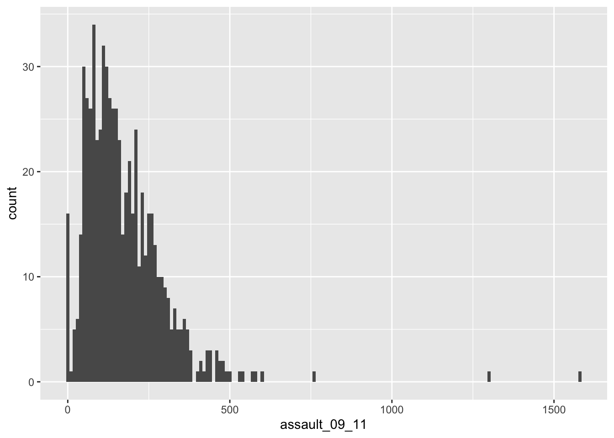

3 Examining data II
3.1 Introduction
Welcome to your third week of Introduction to Quantitative Research Methods. This week we will focus again on examining data, with a particular focus on data visualisation. For the tutorial we will continue to use the asssault incident dataset that we used last week.
3.1.1 Reading list
For this week, you will have to read the following:
- Lane et al., 2003, Chapter 3: Summarizing Distributions. In: Lane et al., 2003, Introduction to Statistics. Houston, Texas: Rice University.
3.1.2 Video: Overview
[Lecture slides] [Watch on MS stream]3.2 Examining data
3.3 Visualising data
3.3.1 Video: Visualising data
[Lecture slides] [Watch on MS stream]This week we are picking up where we left off in the previous section. Repeat the opening steps in last weeks practical to reload the input object containing the assault incidents for London. Through plotting we can provide graphical representations of the data to support the statistics above.
# load csv file from working directory
input <- read.csv('ambulance_assault.csv')To simply have the Ward codes on the x-axis and their assault values on the y-axis we need to plot the relevant columns of the input object.
# quick plot
plot(input$WardCode, input$assault_09_11)
3.3.2 Histograms
The basic plot created in the previous step does not look great and it is hard to interpret the raw assault count values. A frequency distribution plot in the form of a histogram will be much better. There are many ways to do this in R but we will use the functions contained within the ggplot2 library.
# quick plot using the ggplot2 library
p <- ggplot(input, aes(x=assault_09_11))
# inspect
p
Questions
- Remember why printing/plotting the
pobject currently results in an empty canvas?
The ggplot(input, aes(x=assault_09_11)) section means “create a generic plot object (called p) from the input object using the assault_09_11 column as the data for the x axis”. Remember the data variables are required as aesthetics parameters so the assault_09_11 appears in the aes() brackets.
Histograms provide a nice way of graphically summarising a dataset. To create the histogram you need to add the relevant ggplot2 command (geom).
# quick histogram using the ggplot2 library
p + geom_histogram()## `stat_bin()` using `bins = 30`. Pick better value with `binwidth`.
The height of each bar (the x-axis) shows the count of the datapoints and the width of each bar is the value range of datapoints included. If you want the bars to be thinner (to represent a narrower range of values and capture some more of the variation in the distribution) you can adjust the binwidth. Binwidth controls the size of ‘bins’ that the data are split up into. We will discuss this in more detail later in the course, but put simply, the bigger the bin (larger binwidth) the more data it can hold. Try:
# quick histogram using the ggplot2 library
p + geom_histogram()## `stat_bin()` using `bins = 30`. Pick better value with `binwidth`.
3.4 Seminar
Seminar assignment
Seminar questions
3.5 Before you leave
Save your R script by pressing the Save button in the script window. That is it for this week!